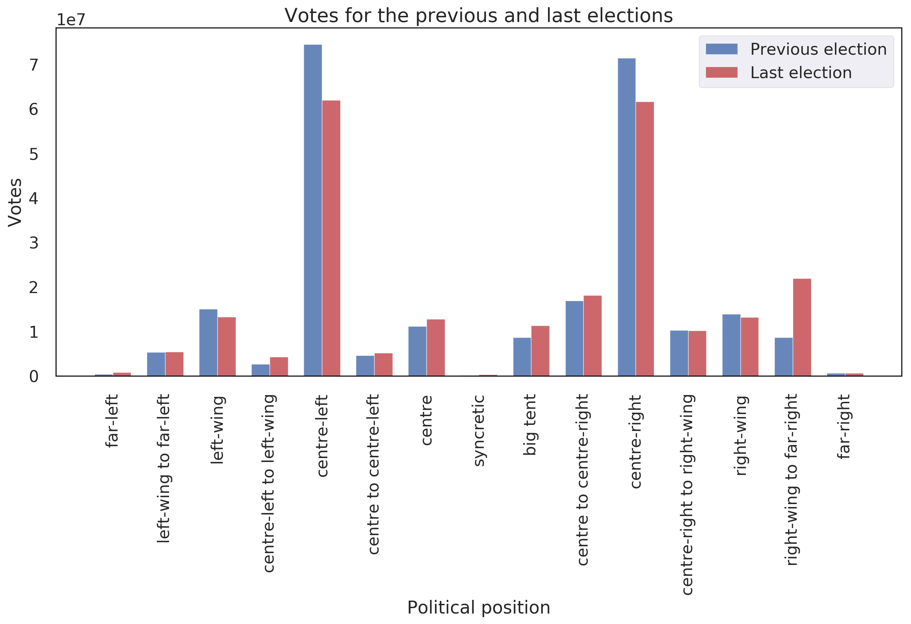
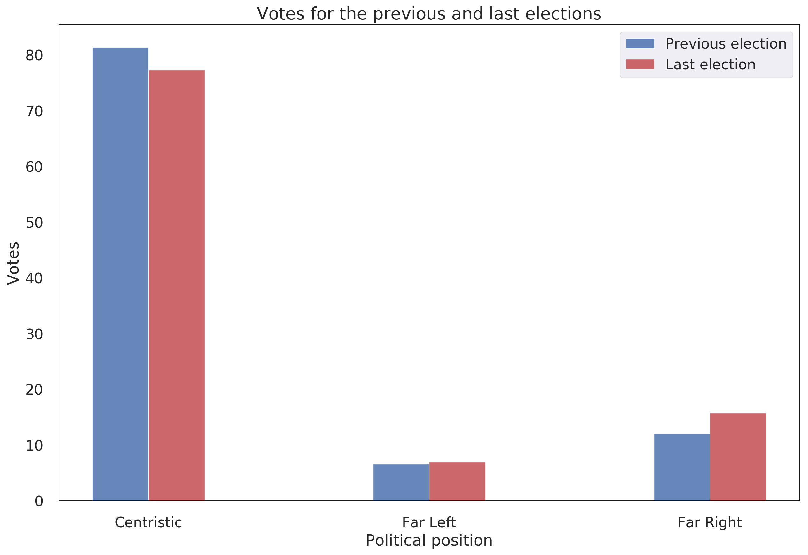

Introduction
The past several years have been characterized by a major shift in the political landscape of the western world. Ever since the election of Donald Trump as the 45th president of the United States of America, the popularity of far right-wing parties seems to be on the rise. Marginalized ever since the end of the Second World War, nationalistic parties have made their comeback on the political map in the recent years. This phenomena threatens to destroy the centre-left/centre-right duopoly that has dominated the European politics. More imprtantly, the strong rise of nationalism can threaten the existence of the European Union, as we have seen in the case of the Brexit referendum. The campaign for Brexit was mainly led by anti-EU nationalistic parties, demanding control over their country’s borders, finance and political decisions. If this trend spreads across Europe we can see the demise of the European Union in the following years, most probably followed by the end of one of the longest peaceful periods on the European continent in the history. For ths reason, we believe that it is very beneficial to systematically study the success of nationalistic parties across the members of the European Union, as well as the reasons and consequences of the shift in the ideology of the ruling parties.
Global success of political positions
Let us start with investigating the success of the right-wing parties in the last national elections across the member countries of the European Economic Area (EEA). For this purpose, we have gathered the results of the last two elections in each member country. In our analysis, we are considering only the parties which have won seats in the national parliament because these are the only parties that have some political power on national and international level. In this section, we will take an aggregated look at the data, and observe the global trend across the European continent. In the first subsection, we are going to take a look at the shift in popularity of different political ideologies by observing the number of votes obtained by each ideology. In the second part, we will see whether there is a shift in the power dynamics of European politics by observing the number of seats won by parties with different ideologies. For this purpose, we have matched each party in our dataset with its political ideology ranging from far-left to far-right
Shift in popularity
The most illustrative factor of a popularity of a certain political position among the electorate is the number of votes gained by the parties representing that position. For this reason, in the following bar chart we present the aggregated number of votes won by different political positions across the EEA for each of the last two elections.

Looking at the visualization, we can draw several conclusions. First of all, we observe a decrease in the number of votes for centre-left and centre-right parties by over 10 million votes. Even though these two positions remain by far the most represented in the european parliaments, this sharp decrease is a sign of a possible collapse of centristic politics in EEA. Furthermore, we can see that the decrease is greater in the case of centre-left politics which is a potential indicator of the shift towards the right. This hypothesis is further supported by the sharp increase of votes for right-wing to far-right parties. With a gain of over 10 million votes, this position seems to be the biggest winner in the last elections across the European continent. However, we can also see a slight increase in the votes for the left-wing to far-left and centre-left to left-wing positions. From this, we can conclude that the european parliaments are getting more polarized, which is yet another indicator of the decline of centristic politics.
As we have seen from the previous analysis, we can see an increase in popularity on the both ends of the political spectrum. Consequently, we can not definetely conclude whether the popularity is shifting towards right-leaning politics, or it is just getting more polarized. For this reason, we aggregate the votes gained by left-leaning (all the positions from centre to centre-left to far-left), right-leaning (from centre to centre-right to far-right), and centristic positions (between centre and big-tent. We present the results in the bar plot below.
From here, we can clearly see an increase of popularity centristic and right-leaning positions, and a decrease in the popularity of left-leaning positions. Thus, we can already conclude that the voters across Europe are shifting their votes towards right-wing parties. However, we are further interested in the shift of popularity of the far-right positions, as these parties are most commonly oriented towards populist, anti-european and extremely nationalistic politics. For this reason, we create yet another agreggation where we create groups for far-left positions (from left-wing to far-left), far-right positions (from right-wing to far-right) and centristic positions (everything in-between). We present the results in the following plot.

In this plot, we can see a decrease in both far-left and centristic positions, and an increase of votes for far-right positions. We finish this section with the conclusion that the popularity of right-leaning, and especially populist far-right political positions is increasing across the european contintent, and we turn our attention towards the question whether the increase of popularity has resulted in increase of political power of the nationalistic parties.
Shift in political power
As we have seen in the previous section, the right-leaning political positions are gaining popularity across Europe. However, this does not imply that they are also gaining political power, as the shift in number of votes might be concentrated in small number of countries, or might be influenced by the number of votes of the biggest member countries. For this reason, in this section we will analise the shift in the average percentage of seats won by the different political positions in the national parliaments. We use the same aggregating steps as in the previous section, starting from the average percentage of seats won by the different positions in the first plot.
In this plot we same the same trend, namely centre-left and centre-right parties seem to be losing power, and all positions right of centre-right are gaining seats. However, we can also observe that some positions on the far left side are also gaining seats, which once again indicates that the polarization of the electorate leads to polarized national parliaments.
We continue our analysis with the second aggregation step, namely grouping together left, right and center positions, as in the previous section. Once again, we observe a shift of the power to the right with left-leaning parties losing several percentage of seats, and center and right-leaning parties gaining seats. We can conclude that the political power in Europe is moving to the right.

Finally, we repeat the analysis with the aggregation of far-left, far-right, and centristic positions and display the results in the plot below. However, in this case we observe an increase of won seats in both far-left and far-right, and a decrease in the centristic positions. From this result, we can conclude that the parliaments are getting more radicalized and polarized. Nevertheless, the increase is much stronger in the case of far-right parties which once again shows us that the nationalist parties are gaining seats in the national parliaments, and are thus getting more powerful.

Success of political positions in different countries
In the previous section we have observed the shift in popularity and power of the political right across all countries member of EEA. We will now turn our attention towards the political situation in different countries. We want to investigate which countries are most left or right leaning, as well as observe which countries have made the biggest shift towards either side of the political spectrum. For this purpose, we have assigned values from -6 to +6 to each political position. The assigned values are given in the following table.
| Position | Scale |
|---|---|
| far-left | -6 |
| left-wing to far-left | -5 |
| left-wing | -4 |
| centre-left to left-wing | -3 |
| centre-left | -2 |
| centre to centre-left | -1 |
| centre | 0 |
| syncretic | 0 |
| big tent | 0 |
| centre to centre-right | 1 |
| centre-right | 2 |
| centre-right to right-wing | 3 |
| right-wing | 4 |
| right-wing to far-right | 5 |
| far-right | 6 |
Next, we calculate the average position of the national Parliament of the country by weighing the position of each the parties in the parliament by the percentage of seats won by that party. In the end we sum the contribution of each parlaimentary party in order to gain an average position of the country’s Parliament. In this way, each country is assigned a value between -6 and 6, with negative values representing left-leaning countries and positive values representing right-leaning countries. The positions of the Parliaments from the last elections are represented in the figure below.
From this figure, we can see that for example Hungary is the most right-leaning country in the EEA, and Greece is the most left-leaning one. We can also observe that most countries in the EEA have right leaning parliaments, which further supports the obervations from the previous section. Apart from the current situation, we are also interested in which countries have made the biggest shift in political power between the last two elections. For this reason we calculate the difference in average position of the parliaments between the two elections, and present the results in the following plot.

Here, we see that Greece has made the biggest shift on the left, and Slovakia has made the biggest shift to the right. Another interesting observation is that Hungary, which has the most right leaning parliament has actually made a shift towards the left, which means that prior to the last election, the Parliament was even further to the right.